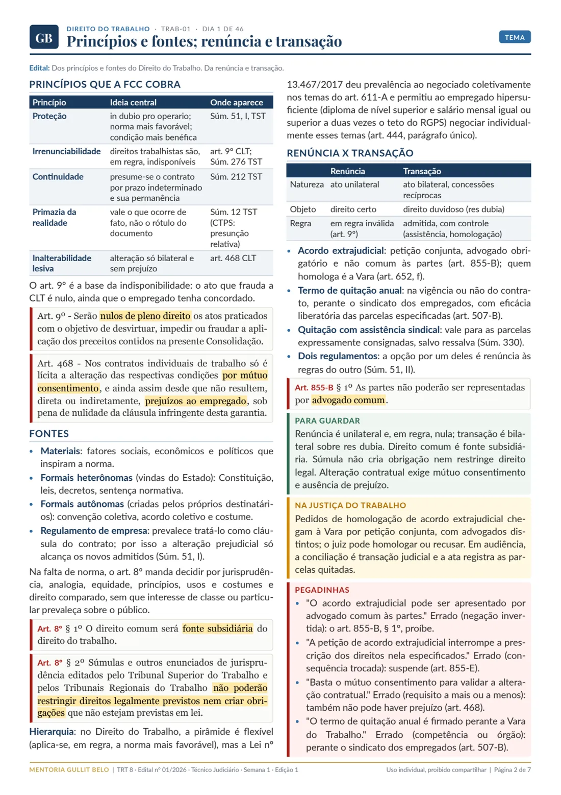

Materiais por edital
Material escrito para um concurso com edital publicado: segue o conteúdo, a banca e a data da prova daquele edital, dia a dia, até a prova.
TRT 8ª Região
- Banca
- FCC
- Inscrições
- até 5 de novembro de 2026
- Prova
- 17 de janeiro de 2027
- Cargos
- Analista Judiciário (Área Judiciária), Oficial de Justiça e Técnico Judiciário (Área Administrativa)
-

TRT 8 dia a dia: Analista e Oficial
67 dias de estudo para os 171 temas do edital, com estudo de caso todo dia.
R$ 97 até 5 de novembro
-

TRT 8 dia a dia: Técnico
46 dias de estudo para os 117 temas do edital, com redação todo dia.
R$ 97 até 5 de novembro
-

Jurisprudência para o TRT 8ª Região
Súmulas, OJs e teses do TST, do STF e do STJ que a FCC cobra, por disciplina e na ordem do edital.
R$ 97, ou R$ 67 junto com o dia a dia
Antes de comprar
- Dia 1 completoAs sete páginas de um dia de estudo, para Analista e Oficial e para Técnico.Ler
- Teste de jurisprudênciaCinco afirmações do material para julgar Certo ou Errado, com comentário.Fazer
Quando sair o edital de outro concurso que eu acompanho, o material dele entra nesta página.